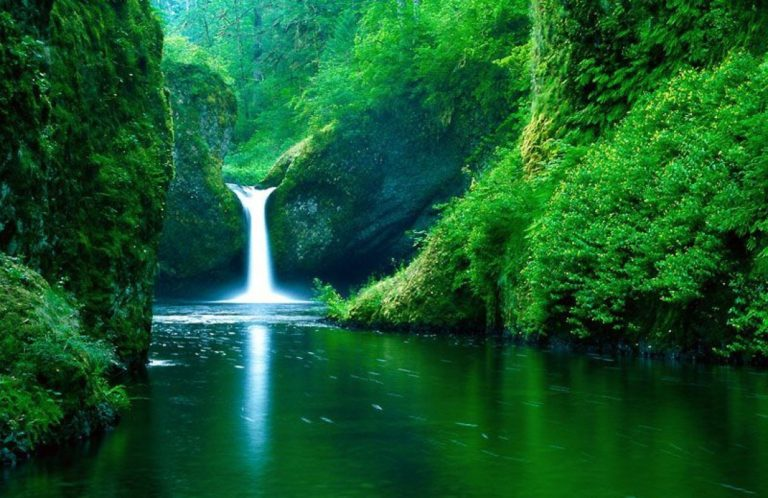
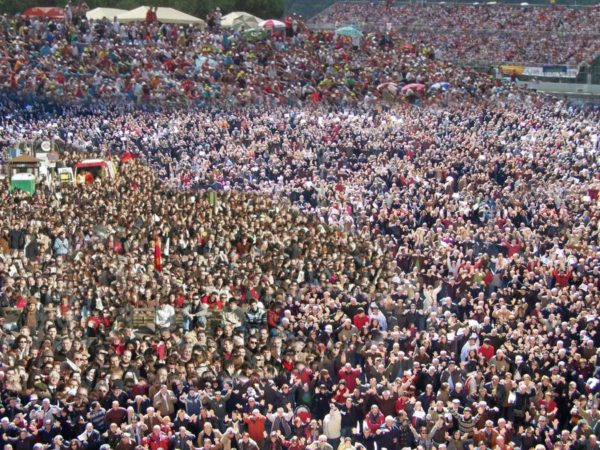

El medio ambiente es un sistema formado por elementos naturales y artificiales que están interrelacionados y que son modificados por la acción humana. Se trata del entorno que condiciona la forma de vida de la sociedad y que incluye valores naturales, sociales y culturales que existen en un lugar y momento determinado.
Desde JOTEPOM ECOLOGY, queremos aclararos ciertos conceptos y ayudaros a entender más como la naturaleza necesita que la ayudemos para seguir dándonos lo mejor de ella.
El medio ambiente es el conjunto de componentes físicos, químicos, biológicos, de las personas o de la sociedad en su conjunto. Comprende el conjunto de valores naturales, sociales y culturales existentes en un lugar y en un momento determinado, que influyen en la vida del ser humano y en las generaciones futuras. Es decir, no se trata solo del espacio en el que se desarrolla la vida, sino que también comprende a los seres vivos, objetos, agua, suelo, aire y las relaciones entre ellos.
Nuestro planeta constituye un conjunto medioambiental equilibrado, todos los elementos se encuentran relacionados entre sí, cualquier alteración natural e incluso artificial, es rápidamente subsanada por la naturaleza. Pero la actividad del hombre, con mayores intereses en su bienestar que en la conservación de ese equilibrio, ha conseguido iniciar un proceso de degradación medioambiental que de seguir así, nos puede llevar a un verdadero caos.

El hombre forma parte del conjunto del medio ambiente, sin embargo su actividad cotidiana produce grandes cambios, proceso que se ha ido desarrollando a lo largo de muchos años y podemos resumirlos en:
- Descubrimiento de la agricultura y la ganadería.
- Mayor necesidad de alimentos.
- Cambios de aspecto en el paisaje, la extensión de los cultivos produce cambios importantes en el paisaje.
- Avances científicos y técnicos, que aumentan la capacidad de supervivencia del ser humano.
- Realización de obras de todo tipo: edificios, caminos, canales, puentes, tendidos eléctricos, etc.
- Industrialización, con la revolución industrial, provocó cambios radicales en el medioambiente a un nivel que hasta el momento nunca se había conocido y que ha ido creciendo hasta nuestros días.
- Crecimiento demográfico, facilitado por los puntos anteriores, que obliga al ser humano a colonizar nuevos territorios y cambiarlos en su propio beneficio.
La explosión demográfica que se produjo en el siglo XX, ha llevado consigo la ocupación de gran parte del planeta, cada vez los terrenos inhabitados son menores. Los recursos marinos y el subsuelo, se explotan a tal escala que pronto nos quedaremos sin estos recursos ya que el nivel de consumo es muy superior al nivel de formación y crecimiento de estas materias primas.
Esta situación esta llegando a poner en serio riesgo el mantenimiento de nuestro planeta, el agotamiento de los recursos puede llegar a provocar la extinción de la vida en el planeta.
Prácticamente todas las actividades humanas transforman el medio natural y provocan cierto grado de degradación. No obstante, algunas resultan particularmente importantes:
- Agricultura y ganadería: pérdida de bosques, aumento de la erosión y disminución de la producción de oxígeno. Desaparición de la flora y la fauna naturales. Impacto visual por la parcelación de los terrenos.
- Pesca: Disminución numérica, o incluso extinción, de diversas especies marinas.
- Extracción de recursos: erosión del terreno, contaminación del suelo y del subsuelo.
- Industria: contaminación atmosférica y de las aguas, lluvia ácida, gases de efecto invernadero.
- Producción de energía: Impacto visual, contaminación atmosférica (centrales térmicas), destrucción de ecosistemas terrestres (presas), generación de radiaciones y residuos muy peligrosos (centrales nucleares).
- Urbanización e infraestructuras: transformación del paisaje, pérdida de ecosistemas, erosión del terreno por obras diversas, contaminación atmosférica y de aguas, y generación de gran cantidad de residuos.
- Guerras: poco consideradas desde el punto de vista del cambio medioambiental, los conflictos bélicos provocan graves daños ecológicos, especialmente cuando se emplean armas químicas o nucleares.
